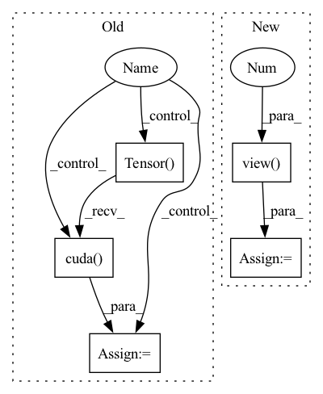

Pattern ID :18818
Before Change
// TODO: WHY NOT:
// TODO: parameters = [param.data.view(-1) for param in model.parameters()] // vectorize each model parameter
// TODO: m_parameters = torch.cat(parameters)
if cuda :
m_parameter = torch.Tensor( [0]).cuda()
else:
m_parameter = torch.Tensor([0])
After Change
Squash model parameters or gradients into a single tensor.
parameters = [param.data.view(-1 ) for param in model.parameters()
] // vectorize each model parameter
m_parameters = torch.cat(parameters)
if cuda:
m_parameters = m_parameters.cuda()
return m_parameters
In pattern: SUPERPATTERN
Frequency: 3
Non-data size: 5
Instances Fragment ID: 61105028
Project Name: smilelab-fl/fedlab
Commit Name: 12925dd3ac83f8a9e1fbd4ed32fb3ec602217a77
Time: 2021-04-09
Author: 928255708@qq.com
File Name: fedlab_core/utils/serialization.py
M Class Name: AnonimousClass
N Class Name: AnonimousClass
M Method Name: ravel_model_params(2)
N Method Name: ravel_model_params(2)
M Parent Class:
N Parent Class:
M File Name: fedlab_core/utils/serialization.py
N File Name: fedlab_core/utils/serialization.py
M Start Line: 10
M End Line: 19
N Start Line: 8
N End Line: 15
Before Change
self.weight_read = torch.matmul(past_normalized, state_normalized.transpose(0,1)).transpose(0,1)
self.index_max = torch.sort(self.weight_read, descending=True)[1].cpu()[:,:self.num_prediction]
for i_track in range(self.num_prediction):
present = present_temp
prediction_single = torch.Tensor().cuda()
ind = self.index_max[:, i_track]
info_future = self.memory_fut[ind]
info_total = torch.cat((state_past, info_future.unsqueeze(0)), 2)
input_dec = info_total
state_dec = zero_padding
for i in range(self.future_len):
output_decoder, state_dec = self.decoder(input_dec, state_dec)
displacement_next = self.FC_output(output_decoder)
coords_next = present + displacement_next.squeeze(0).unsqueeze(1)
prediction_single = torch.cat((prediction_single, coords_next), 1)
present = coords_next
input_dec = zero_padding
// Iteratively refine predictions using context
for i_refine in range(1):
pred_map = prediction_single + 90
pred_map = pred_map.unsqueeze(2)
indices = pred_map.permute(0, 2, 1, 3)
// rescale between -1 and 1
indices = 2 * (indices / 180) - 1
output = F.grid_sample(scene_2, indices, mode="nearest")
output = output.squeeze(2).permute(0, 2, 1)
state_rnn = state_past
output_rnn, state_rnn = self.RNN_scene(output, state_rnn)
prediction_refine = self.fc_refine(state_rnn).view(dim_batch, 40, 2)
prediction_single = prediction_single + prediction_refine
prediction = torch.cat((prediction, prediction_single.unsqueeze(1)), 1)
return prediction
After Change
prediction_refine = self.fc_refine(state_rnn).view(-1, 40, 2)
prediction = prediction + prediction_refine
//pdb.set_trace()
prediction = prediction.view( dim_batch, self.num_prediction, 40, 2 )
return prediction
def write_in_memory(self, past, future): Fragment ID: 61105031
Project Name: marchetz/mantra-cvpr20
Commit Name: 04d7a063354c991d5aaa36f28a63df2ebbee9f78
Time: 2020-01-18
Author: francescom394@gmail.com
File Name: models/model_memory_IRM.py
M Class Name: model_memory_IRM
N Class Name: model_memory_IRM
M Method Name: forward(3)
N Method Name: forward(3)
M Parent Class: nn.Module
N Parent Class: nn.Module
M File Name: models/model_memory_IRM.py
N File Name: models/model_memory_IRM.py
M Start Line: 123
M End Line: 179
N Start Line: 129
N End Line: 190
Before Change
self.weight_read = torch.matmul(past_normalized, state_normalized.transpose(0, 1)).transpose(0, 1)
self.index_max = torch.sort(self.weight_read, descending=True)[1].cpu()
for i_track in range(self.num_prediction):
present = present_temp
prediction_single = torch.Tensor().cuda()
ind = self.index_max [:, i_track]
//ablation study
// prediction_single = self.memory_count[ind]
// prediction = torch.cat((prediction, prediction_single.unsqueeze(1)), 1)
info_future = self.memory_fut[ind]
info_total = torch.cat((state_past, info_future.unsqueeze(0)), 2)
input_dec = info_total
state_dec = zero_padding
for i in range(self.future_len):
output_decoder, state_dec = self.decoder(input_dec, state_dec)
displacement_next = self.FC_output(output_decoder)
coords_next = present + displacement_next.squeeze(0).unsqueeze(1)
prediction_single = torch.cat((prediction_single, coords_next), 1)
present = coords_next
input_dec = zero_padding
prediction = torch.cat((prediction, prediction_single.unsqueeze(1)), 1)
return prediction
def write_in_memory(self, past, future):After Change
prediction = torch.cat((prediction, coords_next), 1)
present = coords_next
input_dec = zero_padding
prediction = prediction.view( dim_batch, self.num_prediction, self.future_len, 2 )
return prediction
def write_in_memory(self, past, future):
Fragment ID: 61105021
Project Name: marchetz/mantra-cvpr20
Commit Name: 04d7a063354c991d5aaa36f28a63df2ebbee9f78
Time: 2020-01-18
Author: francescom394@gmail.com
File Name: models/model_decoder.py
M Class Name: model_decoder
N Class Name: model_decoder
M Method Name: forward(2)
N Method Name: forward(2)
M Parent Class: nn.Module
N Parent Class: nn.Module
M File Name: models/model_decoder.py
N File Name: models/model_decoder.py
M Start Line: 128
M End Line: 166
N Start Line: 125
N End Line: 162